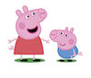

Peppa Pig
 De: La Frikipedia, la enciclopedia extremadamente seria.
De: La Frikipedia, la enciclopedia extremadamente seria.
De la serie Malos malosos:
| Archienemigo de
|
Doki y Los cabashitos multicolores
|
| Nacimiento
|
2004
|
| Muerte
|
¡No muere! ¡Por que ves su programa Y le das vida eterna!
|
| Ocupación
|
Idiotizar Niños y algunos adultos
|
| Nacionalidad
|
Desconocida (Por ahora)
|
| Índice de maldad
|
Maldad? MALDAD?! Es Maligna!!
|
| Atentados contra la humanidad
|
Vengarse de Doki y los ponis por tener mas productos que vender
|
| Religión
|
Peppaniana(ella la fundo)
|
Saltemos en un charco de lodo!!
«Saltemos en un charco de lodo»
~ Peppa En cada episodio de su serie
«Hola, yo soy Peppa Pig, y este bas**rdo deforme es mi hermano»
~ Peppa Presentando a su família
«Soy Peppa la cerdita»
~ Peppa Copiando a sonic the hedgehog
Peppa es un cerdo amorfo con una serie de televisión en "El canal para niños con retraso" (? que se dedica a idiotizar con sus mensajes subliminales para sus diabólicos fines. Cada vez que un niño ve por primera vez este ridículo show intentara a toda costa no perdérselo... ¡Aunque le cueste la virginidad, o hasta perder la cena! ¡Ellos lo harán!
Pero lo mas oscuro de todo esto...
¿Que es en realidad Peppa?
Peppa, parecerá a primera instancia un tierno cerdo rosado... ¡Pero no! Peppa es algo mas oscuro, aquí la explicación:
- Soy Peppa (Su frase mas famosa) al revés es "Appep Yos", si a "Appep" le sacamos la P que sobra queda como resultado "Apep" ¿Pero que quiere decir esto? ¡Esta mas claro que el agua! ¡Apep es un demonio del caos! Este se representa en forma de serpiente en llamas, (No, chica en llamas no) eso quiere decir que "Peppa" hizo un ¡Pacto con este demonio! Asi conseguir el poder suficiente para idiotizar y obtener el alma de miles de pobres jóvenes los cuales usara para atacar el mundo entero.
¡Alejen a sus hijos del televisor! Es preferible que vean porno o la teletienda antes que esto...
Como lleva a cabo su plan
Ya lo esta haciendo.
Su plan se basa en idiotizar a los niños Y a IP anónima global mente para que cuando todos lo estén aparecerá en persona y mandara a todos a atacar a los adultos... Porque la mayoría de adultos no le pueden hacer nada a los niños por la ley. Peppa empezara por japon, donde conquistara a los mas mas pajeros a través de publicidades de youtube, (¡Esta en todas partes!) realizando un conjuro que repetira con los demas paises:
Crudele est bonum
Est destruere bonum
Omnis , occidantur
Curent adulti mori
Nemo debet vivum
Praeter aetatem
Planeta dominabitur
¡Et non est qui resistat ei!
Suponemos que Peppa terminara en "Brasil", donde terminara de conquistar a los jóvenes y luego con su poder acumulado poseerá la estatura del cristo y esta ¡Cobrara vida! Peppa empezara a destruir todo lo que encuentre hasta que su excitación pare... Entonces tendrá su menstruación de proporciones épicas que inundara el mundo entero... Excepto a Australia, que permanecerá seca como un pañuelo limpio.
Compañeros en su plan
- George:su capitan al mando de la idiotizacion con sus estupides te lava el cerebro el doble de rapido de lo normal.
 Peppa y George... Solo miren su fría mirada.
- Richard
WattersonLiebre:El asistente de George es tan estúpido o mas que el.
Regularidad en la tv
Los lunes a viernes:
- 1 Hora en la mañana
- 1 En la tarde
- 1 En la noche
Sabados y domingos:
- 2 Horas en la mañana
- 1 En la tarde
- 2 En la noche (El que aprovecha mas IP anónima para verlo)
sabías que ?
- ¿Quiere dominar al mundo pero no sabe andar en bicicleta?
- ¿Es amiga de un Wegee? D:
- ¿Es illuminati en secreto? Bueno, eso ya no seria un secreto...
- ¿En realidad se quiere vengar porque comemos a su especie?
- ¿Sus peores enemigos son Doki y los cabashitos de colores?
- ¿Cada vez que salta hace un terremoto?
- ¿Es un cerdo y usa zapatos?
- ¿Si se le tira a la hogera se vuelve comestible?
- ¿Se puede comer en navidad?
- ¿Seguro que mientras lees el artículo estas viendo su serie?
- ¿Y cuando no te fijas se ríe diabolicamente?
Autor(es):
- Fordus
- Thelordg95
- ELFRIKINATOR
- ZaramaXGamer
- GalleteroExtremo
- Jidef
- Gonzix.f
- Prismetz
- DarkElVader14
- Pedro22
Frikipedia 2005-2016, Licencia
GFDL 1.2 - Extraído por FrikiLeaks